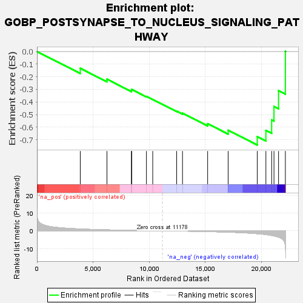
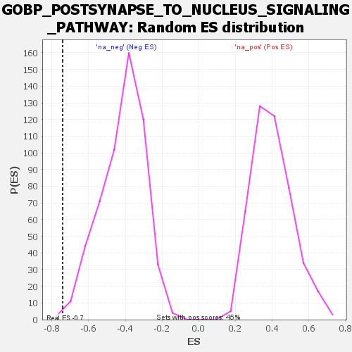

| | | Dataset | deseq_dnfgfr_res_for_gsea |
| Phenotype | NoPhenotypeAvailable |
| Upregulated in class | na_neg |
| GeneSet | GOBP_POSTSYNAPSE_TO_NUCLEUS_SIGNALING_PATHWAY |
| Enrichment Score (ES) | -0.7416593 |
| Normalized Enrichment Score (NES) | -1.7887951 |
| Nominal p-value | 0.0018281536 |
| FDR q-value | 0.1143395 |
| FWER p-Value | 0.895 |
Table: GSEA Results Summary

Fig 1: Enrichment plot: GOBP_POSTSYNAPSE_TO_NUCLEUS_SIGNALING_PATHWAY
Profile of the Running ES Score & Positions of GeneSet Members on the Rank Ordered List
| SYMBOL | RANK IN GENE LIST | RANK METRIC SCORE | RUNNING ES | CORE ENRICHMENT | | 1 | Kpna2 | 3858 | 1.029 | -0.1329 | No |
| 2 | Jak2 | 6237 | 0.519 | -0.2195 | No |
| 3 | Kpna1 | 8415 | 0.227 | -0.3086 | No |
| 4 | Wnt3a | 8446 | 0.223 | -0.3011 | No |
| 5 | Abi1 | 9755 | 0.087 | -0.3566 | No |
| 6 | Stat3 | 10315 | 0.031 | -0.3806 | No |
| 7 | Rnf10 | 12448 | -0.109 | -0.4725 | No |
| 8 | Nsmf | 12968 | -0.163 | -0.4894 | No |
| 9 | Rela | 15208 | -0.442 | -0.5727 | No |
| 10 | Cabp1 | 17034 | -0.760 | -0.6246 | No |
| 11 | Camk4 | 19627 | -1.645 | -0.6757 | Yes |
| 12 | Nrg1 | 20398 | -2.107 | -0.6259 | Yes |
| 13 | Htt | 20912 | -2.641 | -0.5432 | Yes |
| 14 | Prr7 | 21119 | -2.911 | -0.4357 | Yes |
| 15 | Anks1b | 21525 | -3.565 | -0.3110 | Yes |
| 16 | Crtc1 | 22133 | -8.471 | 0.0014 | Yes |
Table: GSEA details [plain text format]

Fig 2: GOBP_POSTSYNAPSE_TO_NUCLEUS_SIGNALING_PATHWAY: Random ES distribution
Gene set null distribution of ES for GOBP_POSTSYNAPSE_TO_NUCLEUS_SIGNALING_PATHWAY